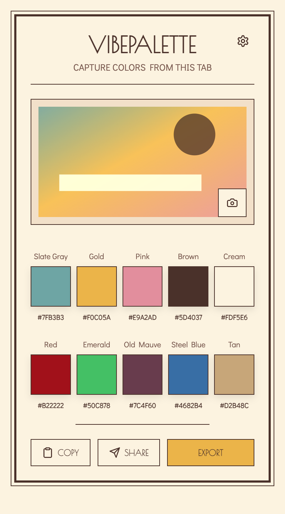
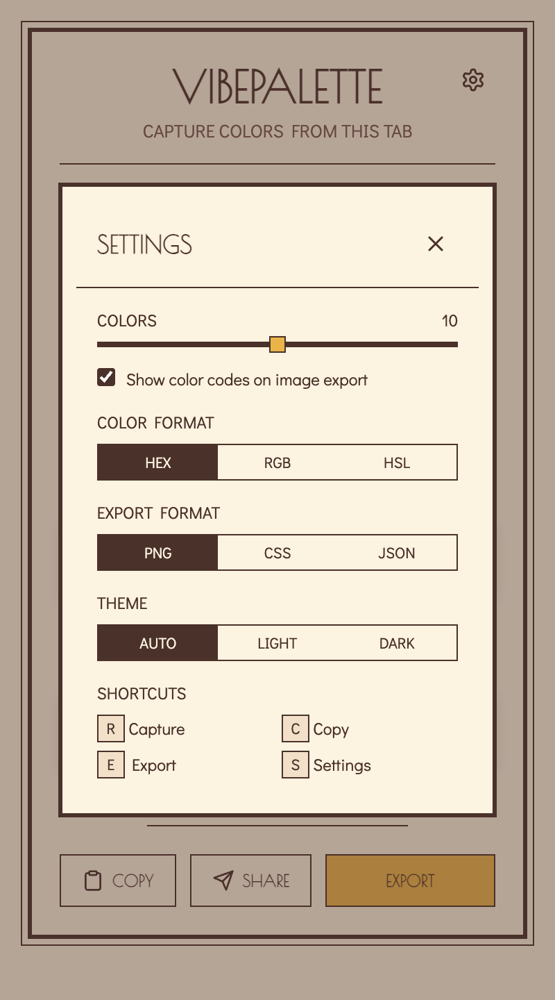

VibePalette 2.0.1 is a Chrome and Edge extension.
The README and package manifest directly identify the product, version, and supported browsers.
ev_1d1f635f3f7f · README.mdev_29a17ee2ba13 · package.jsonA source-available Chrome and Edge extension that captures the visible tab, extracts a balanced palette inside the extension workflow, and prepares it for copying, sharing, or export.


Capture the current tab with VibePalette, extract a balanced set of colors, and move directly into design or development-ready outputs.
VibePalette combines quantized RGB bins, global dominance scoring, cell winners, corner averages, and top-band sampling to avoid letting tiny saturated details dictate the result.
Balanced palette selection preserves meaningful color variety while avoiding irrelevant hue families that do not belong to the source page.
Set a palette from 5–10 colors, switch among HEX, RGB, and HSL, and work in auto, dark, or light themes.
Copy the colors, create a Coolors URL, or export the palette as a framed PNG, CSS custom properties, or JSON.
VibePalette is MIT-licensed. Its documentation records 125 passing tests plus an unpacked Edge smoke test covering the popup, settings, action labels, scripts, and console output.
The README and package manifest directly identify the product, version, and supported browsers.
ev_1d1f635f3f7f · README.mdev_29a17ee2ba13 · package.jsonBoth the README and package description directly state this workflow.
ev_1d1f635f3f7f · README.mdev_29a17ee2ba13 · package.jsonThe extraction techniques and their stated purpose appear directly in the README and technical findings.
ev_1d1f635f3f7f · README.mdev_f6bfc4d486d1 · docs/findings.mdThe README lists each output, and the project organization identifies the corresponding export helpers.
ev_1d1f635f3f7f · README.mdev_32878d845a83 · docs/organization.mdThese customization options are directly listed in the README.
ev_1d1f635f3f7f · README.mdThe README directly lists the four shortcuts and actions.
ev_1d1f635f3f7f · README.mdThe license file contains the MIT License, and package metadata declares MIT.
ev_636c6f038df0 · LICENSEev_29a17ee2ba13 · package.jsonThe findings and progress logs directly record these verification results.
ev_f6bfc4d486d1 · docs/findings.mdev_de444c6d99a4 · docs/progress.md